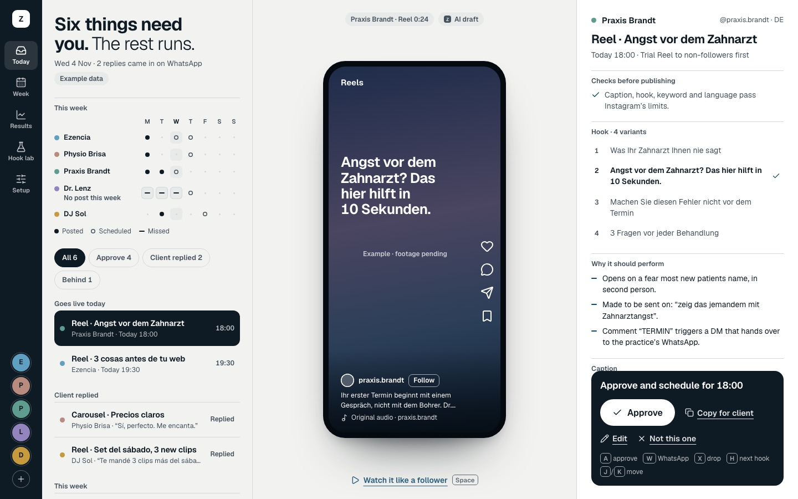
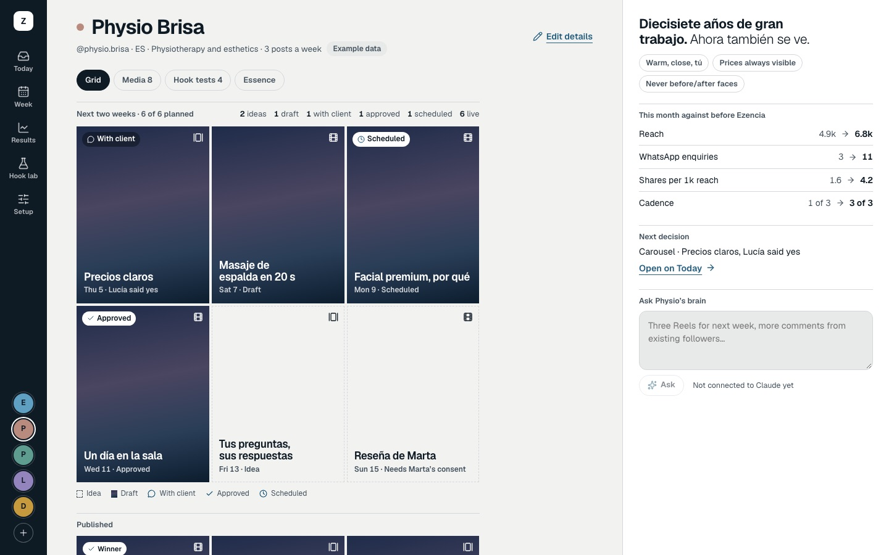
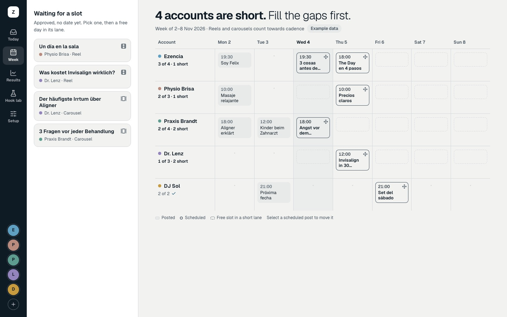
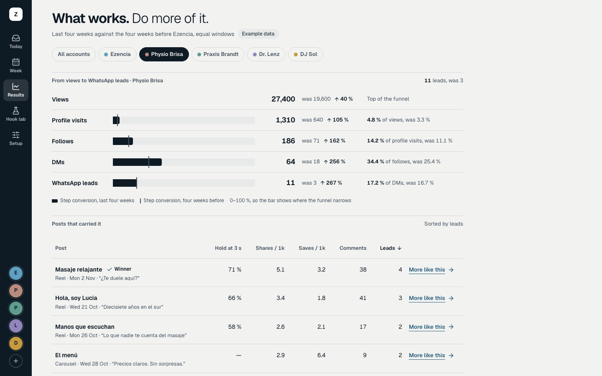
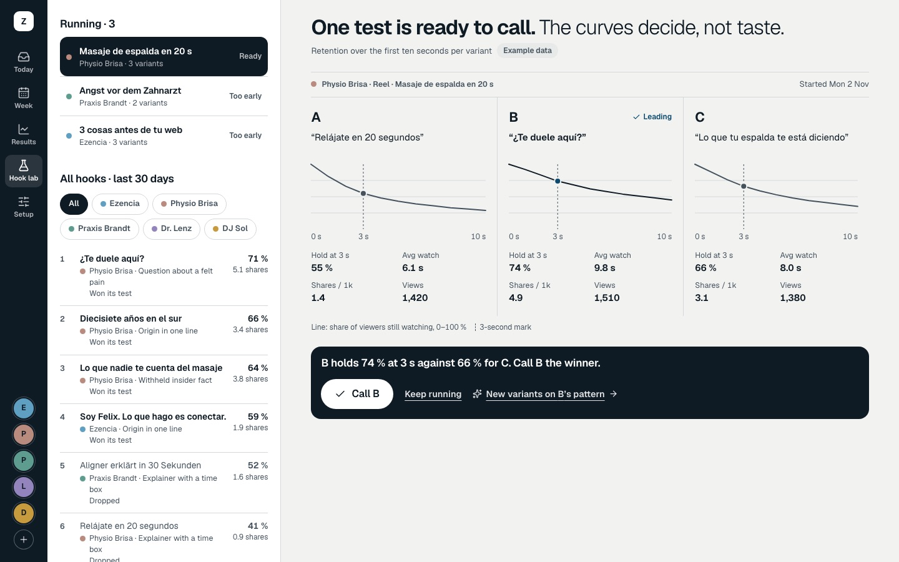
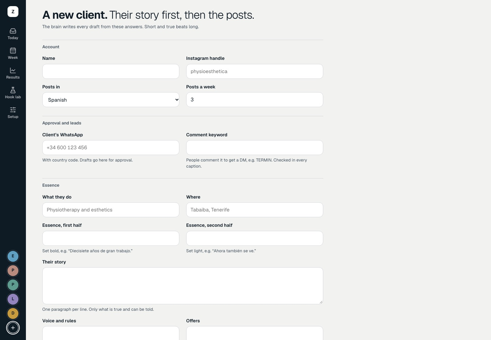
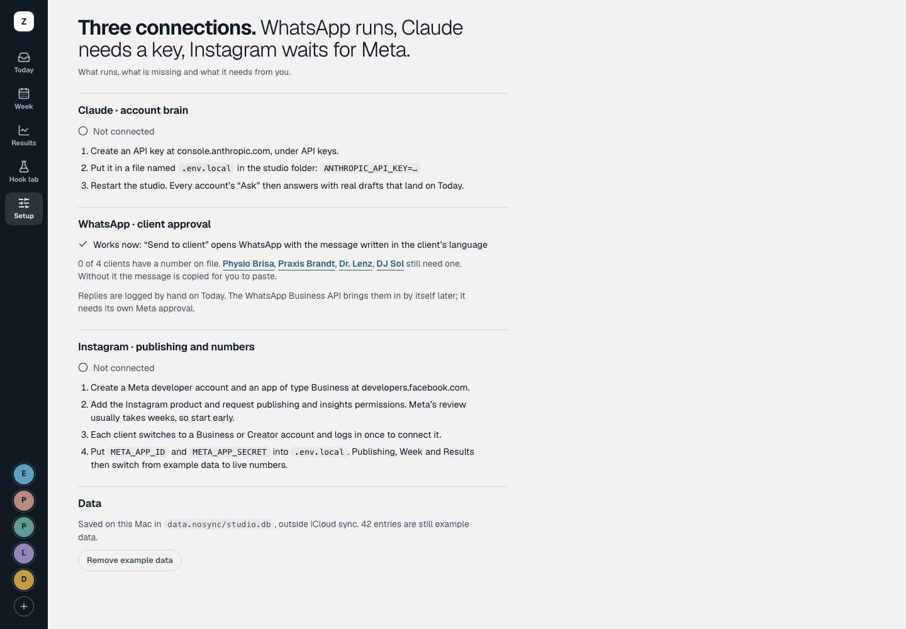

Ezencia Studio. Der Stand.
Ein privates Instagram-Studio für Ezencia und bis zu zehn Kundenaccounts. Tiefe und Tempo: Die KI entwirft, Felix entscheidet, der Kunde gibt per WhatsApp frei. Ziel sind Ergebnisse: Views, Follower, Anfragen und Leads.
- 7 Screens
- Datenbank speichert
- WhatsApp-Freigabe läuft
- Prüfregeln vor dem Freigeben
- Claude-Gehirn gebaut, wartet auf API-Key
- Instagram vorbereitet, wartet auf Meta
Demo mit Beispieldaten. Kundennamen sind anonymisiert, alle Posts und Zahlen erfunden. Stand 31. Oktober 2026.
Today
Der Morgen in einem Satz: was heute eine Entscheidung braucht und was von allein läuft.
- Warteschlange: geht heute live, Kunde hat geantwortet, diese Woche
- Reel-Vorschau so, wie ein Follower sie sieht
- Hook-Varianten, Begründung, Caption
- Prüfung vor dem Freigeben: Instagram-Limits, Kommentar-Keyword, Sprache
- „Send to client“ öffnet WhatsApp mit fertiger Nachricht in der Sprache des Kunden
- Ein Block für die eine Entscheidung, auch per Tastatur

Account-Welt
Jeder Kunde als eigene Geschichte, hier eine Physiotherapie-Praxis.
- Profil-Raster der nächsten zwei Wochen mit Status
- Tabs: Raster, Medien, Hook-Tests, Essenz
- Vorher/Nachher seit Ezencia
- Das Account-Gehirn: Claude schreibt aus Essenz und Ergebnissen neue Entwürfe

Week
Alle Accounts als Bahnen über die Woche. Lücken springen ins Auge.
- Wer liegt unter seinem Rhythmus, wer ist im Takt
- Freigegebene Posts ohne Termin warten in der Ablage
- Antippen und platzieren oder ziehen, mit Rückgängig
- Geplante Posts verschieben

Results
Was wirkt. Davon mehr.
- Trichter: Views, Profilbesuche, Follows, DMs, WhatsApp-Leads
- Letzte vier Wochen gegen die vier Wochen vor Ezencia
- Welche Posts es getragen haben, sortierbar
- „More like this“ schickt den Auftrag ans Account-Gehirn

Hook lab
Die Kurven entscheiden, nicht der Geschmack.
- Laufende Tests mit zwei oder drei Hook-Varianten
- Haltekurve der ersten zehn Sekunden je Variante
- Gewinner erst, wenn genug Views da sind
- Bestenliste aller Hooks der letzten 30 Tage

Neuer Kunde
Ein Kunde ist in wenigen Minuten im Studio.
- Name, Instagram-Handle, Sprache, Rhythmus
- WhatsApp-Nummer und Kommentar-Keyword
- Essenz, Geschichte, Stimme und Regeln, Angebote, Zielgruppe, Ziel
- Daraus schreibt das Gehirn jeden Entwurf

Setup
Was läuft, was fehlt und was es braucht.
- Claude: API-Key eintragen, dann schreibt jedes Account-Gehirn echte Entwürfe
- WhatsApp: läuft, mit Liste der Kunden ohne Nummer
- Instagram: die vier Schritte bis zur Meta-Freigabe
- Beispieldaten mit einem Klick entfernen
